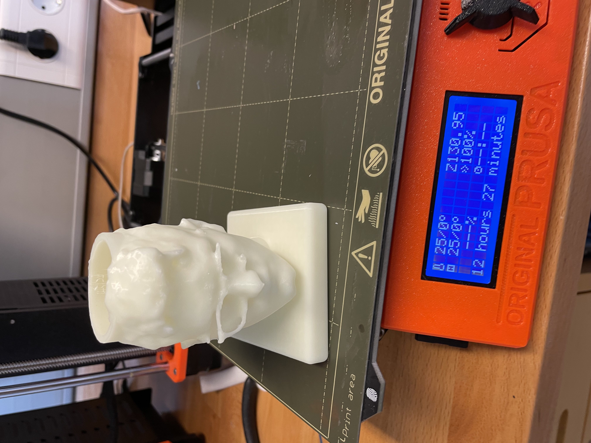

Project 3 - 3D printing and Scanning
Sorry, this one is also in Icelandic...
ATHUGIÐ - ÞETTA VERKEFNI ER EKKI AUÐVELT
Efnisyfirlit
Hér er hægt að sjá hvað ég gerði og hvenær í réttri röð. Hægt er að fylgja köflunum eftir í röð eða fara aðeins í þann kafla sem þarf að sjá.
- Fræmkvæma 3D skönnun
- Teikna í Fusion 360
- Hönnun
- Fylla í hausinn
- Setja í slicer
- Prenta
Forrit sem þarf að ná í til þess að hægt sé að gera verkefnið.
- Scaniverse (IOS)
- Fusion 360
- PrusaSlicer
1. Framkvæma 3D skönnun
Sækja forritið

Skanna
Fá niðurstöðu

Þegar 3D skönnunin er tilbúin þá þarf að færa skönnunina úr forritinu yfir í Fusion 360. Hægt er að gera "Export" í gegnum Scaniverse og vista sem STL file sem hægt er að opna í fusion (einnig hægt að nota OBJ).
2. Setja inn í Fusion
Þegar búið er að opna 3D skönnunina í Fusion þá kemur hún upp aðeins sem Mesh. Meshið er mjög þétt og því þarf að nota Reduce Mesh eiginleikan til þess að einfalda meshið til þess að tölvan geti unnið með það. Í mínu tilfelli notaði ég 15% (0.15) af upprunalegu meshi og gaf það góða niðurstöðu, hér þarf að meta í hverju tilviki fyrir sig.
Næsta skref er að breyta meshinu í solid. Það er gert með því að nota Convert mesh, það er fundið undir mesh flipanum og þar undir í modify og þar er valið "Convert Mesh". Í mínu tilviki þá kom hausinn rosalega lítill inn í fusion og til þess að breyta stærðinni valdi ég "Modify" undir Solid og þar valdi ég "Scale" og notaði þá margföldun sem ég vildi til þess að hafa hausinn eins stóran og ég vildi.
Opna í Fusion 360

Nota "Reduce Mesh"

"Convert Mesh"
3. Hönnun
Þá er komið að því að hanna og bæta við ef eitthvað vantaði við skönnunina. Í mínu tilfelli þá vildi ég gera pennastand úr höfðinu á mér og því þurfti ég að gera gat í það á toppnum og setja undir það fót.Gleraugun voru ekki heil eftir nokkrar tilraunir af skönnun og bætti ég því við í þessu skrefi.

4. Boundery Fill (Fylla formið)
Þetta var erfiðasta skrefið til að finna út úr. Þar sem meshið kemur ekki fullt þá þarf að láta Fusion fylla í það fyrir okkur. Til þess þá notum við "Boundery Fill". Þá veljum við hausinn sjálfan og svo hvar við viljum afmarka hann. Veljum einnig "New body" þar sem við erum að setja upp nýtt body sem er þau hausinn "fullur" sjálfur. Hér tók þetta um klukkutíma fyrir forritið að búa til hausinn fylltan...Svo hér þarf þolinmæði. Þegar þessu er lokið þarf að passa að við höfum aðeins 1 body. Því þarf að velja 2 hluti í einu og nota "Combine".
Setja inn í PrusaSlicer
Þegar aðeins eitt body er eftir er hægt að exporta þan hlut úr Fusion. Þá er hægt að velja STL skrá (eða OBJ) og vistað og sú skrá opnuð í PrusaSlicer.
Þegar komið er inn í prusa og búiða að setja hlutinn inn þá er að velja réttan prentara fyrir verkið. Velja support "Everywhere", 15% innfill og velja rétt scale til þess að nýta öll 100g af efni. Efnið sem var notað var PLA sem lýsir í myrkri eins og má sjá hér fyrir neðan.
Prentunin
Þegar búið er að slicea þá þarf að sækja G-code með því að smella á "Export G-code" og flytja þá skrá inn á SD kort sem er svo sett í Prusa prentarann. Því næst passað að rétt efni sé í prentaranum, skráin valinn í og prentið sett af stað. Prentið getur tekið langan tíma. En þá er verkefnið búið eins og sjá má hér.
